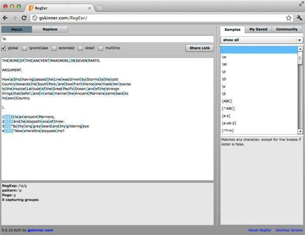

2.5 匹配空白符
可以用以下简写式匹配空白符：
\s
请在RegExr试一试并看看高亮的部分（参见图2-5）。以下字符组与\s匹配的内容相同：
[ \t\n\r]

图2-5 在RegExr中用\s匹配空白符
也就是说，它会匹配：
在RegExr中空格符与制表符会被标亮，但换行符和回车符则不会。
可想而知，\s也有对应的大写形式。要匹配非空白字符，则使用：
\S
这个简写式匹配除空白符之外的所有符号。它匹配字符组：
[^ \t\n\r]
或者是：
[^\s]
请在RegExr中试一下看看会发生什么。
除了\s匹配的字符之外，还有其他不太常见的空白字符。表2-2列出了匹配常见和不太常见的空白字符的简写式。
表2-2 匹配各种空白符的简写式
| 字符简写式 | 描述 |
|---|---|
| \f | 换页符 |
| \h | 水平空白符 |
| \H | 非水平空白符 |
| \n | 换行符 |
| \r | 回车符 |
| \s | 空白符 |
| \S | 非空白符 |
| \t | 水平制表符 |
| \v | 垂直制表符 |
| \V | 非垂直制表符 |